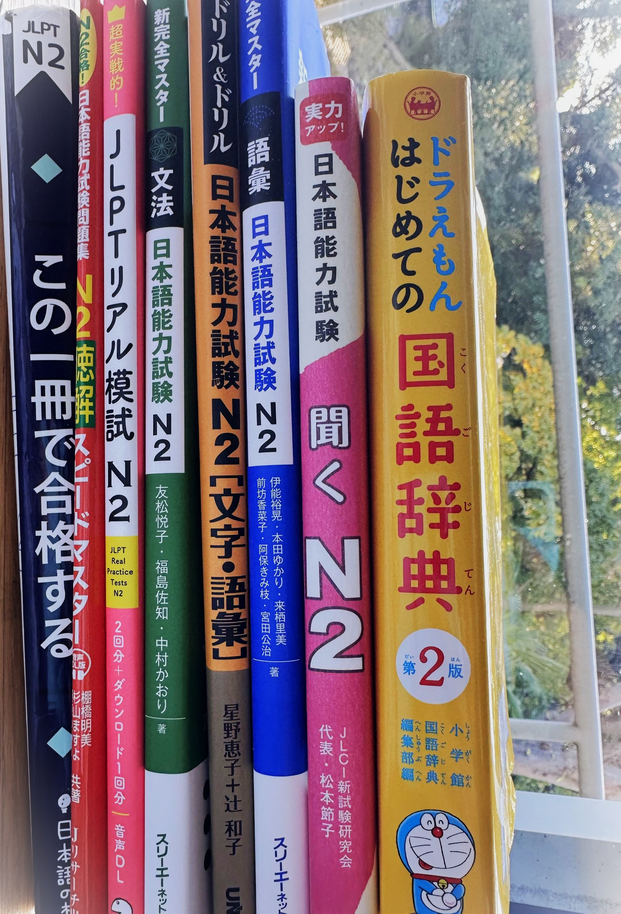

一番夢中になったことや、力を入れて取り組んだことは何か？

現在、一番力を入れて取り組んでいるのは日本語の勉強です。
日本文化に興味を持ったのは、子どもの頃でした。
当時、私は日本のゲームが大好きで、友達と遊ぶために自分でも紙やノートでゲームを作るほど熱中していました。
ただ、当時は日本の創造力が世界にどれほど大きな影響を与えているかまでは理解していませんでした。
その後、15歳でアメリカに留学した際、現地のアメリカ人の友達の家にも日本のゲームがあるのを目にしました。
そこで初めて、日本のゲームの世界的な影響力の凄さを肌で実感しました。
さらに18歳の時、カリフォルニアのホームステイ先で日本人留学生と出会いました。
彼と友達になり、日本の漫画やアニメを紹介してもらったことが、本格的に日本語を勉強するきっかけになりました。
日本人の考え方には世界の他の国々とは異なる独自の魅力があると感じ、「その背景をもっと深く理解したい」と強く思うようになったのです。
そのため、ボストン大学に入学してからは、「日本の友人たちやその考え方を深く理解したい」という強い思いで、必死に日本語を勉強してきました。
日本語はまだまだ勉強中ですが、私の夢は日本のゲーム会社で働くことです。
その夢を叶えるために、絶対に諦めず、これからも全力で頑張ります！